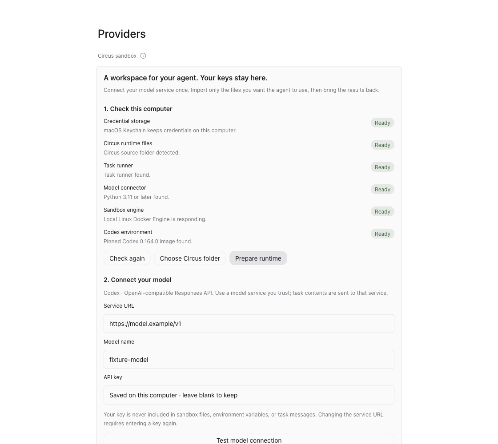
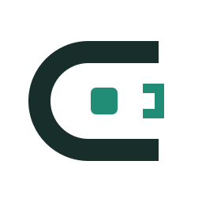
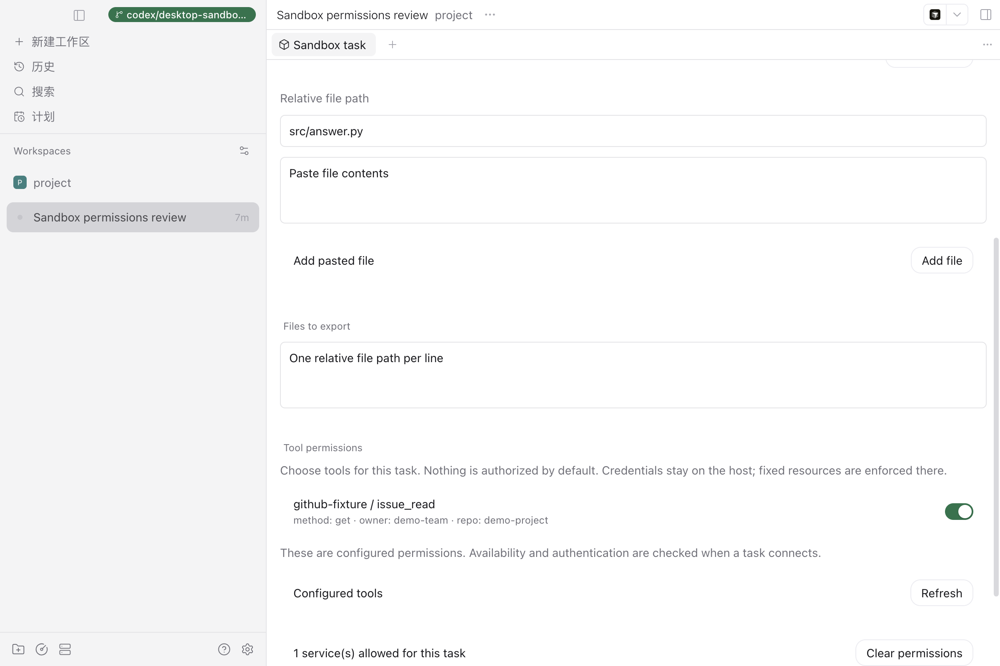
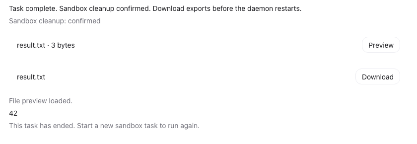

01 / Host credentials
真实凭据不进入沙箱
Keychain 保存模型与 MCP 凭据；宿主连接器代为完成认证。

桌面选择边界，Rust 控制面拥有任务生命周期，宿主代理连接服务，Docker + runc 执行隔离。

宿主保管凭据，Rust 固化任务约束，Docker + runc 执行，最终返回产物与清理状态。

Keychain 保存模型与 MCP 凭据；宿主连接器代为完成认证。
Rust 运行器只接受已配置连接和显式 grant；仓库等固定参数由宿主 broker 注入，Agent 不能覆盖。

Rust 运行器只有在产物读取完成且沙箱销毁成功后才发布成功；未确认清理不会显示为 confirmed。